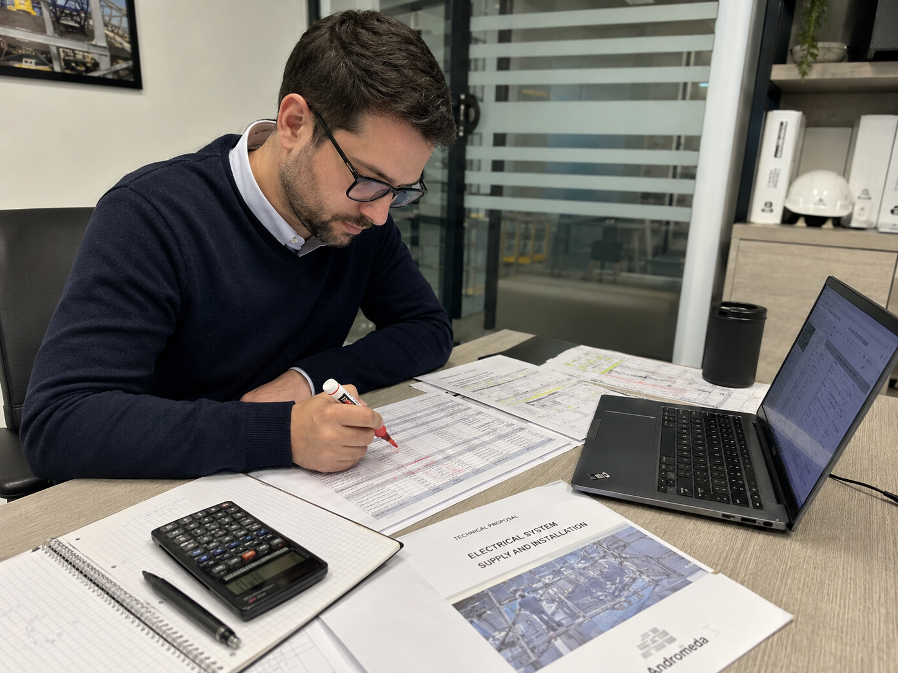
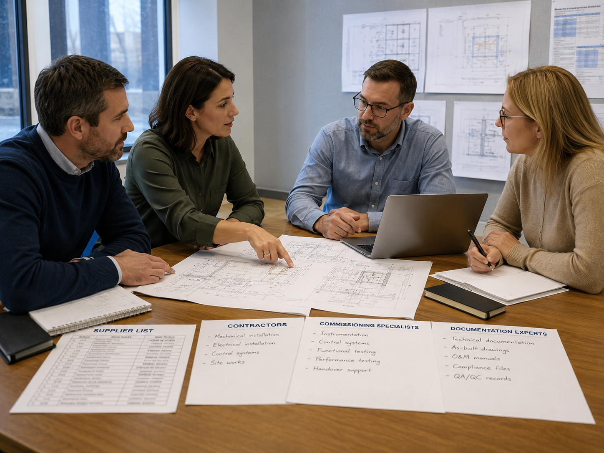
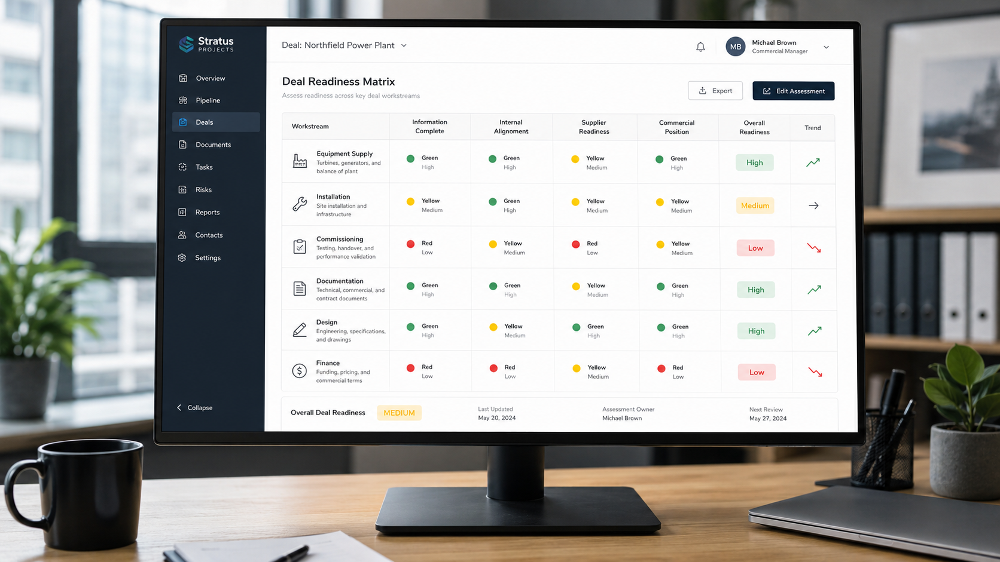

КП на видеонаблюдение: не учтены скрытые блоки
В смете есть камеры и монтаж, но нет ИБП, шкафов, ПНР, архива и исполнительной документации.
Что даёт разбор: клиент видит неполный состав до подписания.База знаний
Пока нет подтверждённых публичных кейсов, используем честный формат: типовой сценарий без выдуманных цифр.

В смете есть камеры и монтаж, но нет ИБП, шкафов, ПНР, архива и исполнительной документации.
Что даёт разбор: клиент видит неполный состав до подписания.
Есть монтажники, но нет поставки, ПНР и финансового плеча.
Что даёт разбор: рекомендация идти не головным, а через монтажный блок.
Поставка есть, исполнение не закрыто.
Что даёт разбор: список недостающих ролей и возможных исполнителей.
Сроки поставки, монтажа и приёмки не совпадают с реальностью.
Что даёт разбор: клиент меняет условия или не входит в убыточную историю.Статьи
Проверяйте границы работ, пусконаладку, кабельные трассы, шкафы, ИД, доставку, гарантию и условия приёмки.
Чаще всего из-за неполной сметы, неверных сроков, отсутствия отсрочки и недооценки документации.
ПНР - это настройка, тестирование, проверка функций и сдача системы. Без него монтаж не превращается в рабочий объект.
Исполнительная документация требует времени, дисциплины и компетенции. Если её нет в смете, она станет скрытым расходом.
Головная роль выгодна только при закрытых ресурсах. Если нет поставки, ПНР или финансов, безопаснее отдельный блок.
Это таблица, где по каждому блоку видно: закрыто, частично, риск, нет данных или не требуется.

Демо-отчёт
Настоящий PDF на вымышленном объекте: обложка, вводные, вывод, матрица 7 блоков, риски, скрытые работы, недостающие ресурсы, вопросы, roadmap, рекомендации и дисклеймер.
Скачать demo-report.pdf